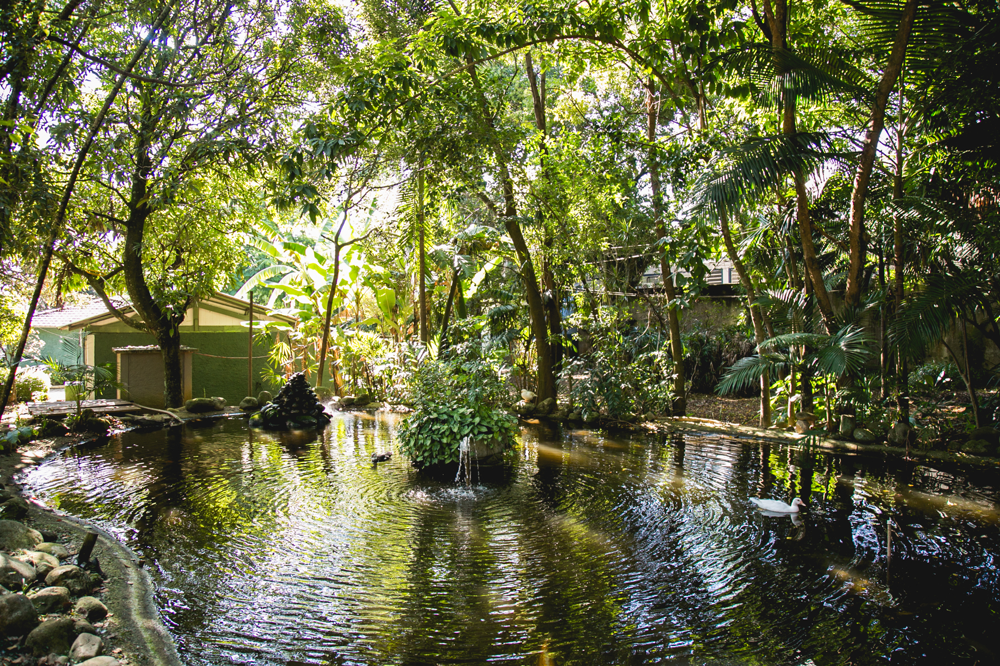
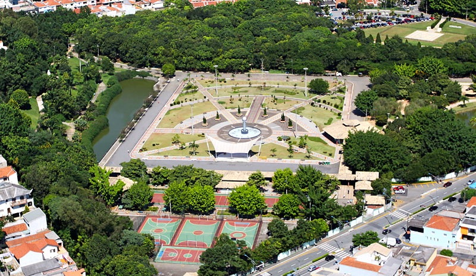
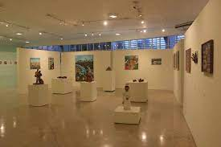
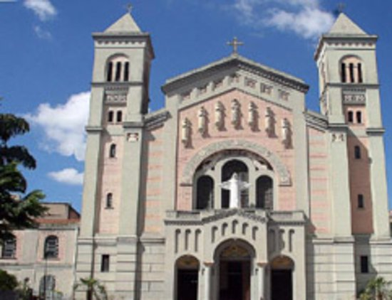
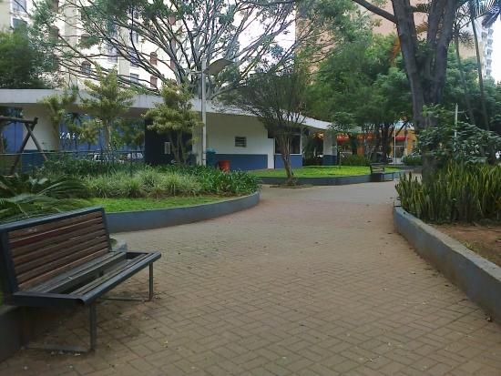

Ilustrações de São Caetano do Sul
Esse é um video contando um pouco da história de São Caetano em homenagem aos seus 142 anos.
Pontos Turísticos

Parque Botânico Jânio da Silva Quadros
Esse parque também é uma escola de ecologia. Lá, você e a sua família poderão ver as carpas no lago,
comer frutas direto das árvores frutíferas e garantir o piquenique nos quiosques do ambiente. Não
podemos ignorar as belíssimas fotos que se pode tirar nesse cenário natural, não é mesmo?

Espaço Verde Chico Mendes
Se o seu passeio preferido estiver relacionado ao muito verde e uma super infraestrutura para prática
de esportes, você já chegou ao lugar certo! O Espaço Verde Chico Mendes é um parque bastante
famoso na cidade e faz jus à fama.
.jfif)
Museu Histórico Municipal
Quando se trata de história, a cidade de São Caetano do Sul não deixa a desejar. O Museu Municipal
também vale a visita. O espaço, que antes era a casa da família De Nardi, conta com mais de 5 mil
itens, que apresentam detalhes sobre a rotina dos antigos moradores, além de peças sacras e fotos
antigas da cidade e habitantes da região.

Pinacoteca Municipal
Agora, se você já faz parte do “time cultural” e é apaixonado por tudo o que tem a ver com arte e afins,
vai gostar de saber que a Pinacoteca Municipal de São Caetano do Sul tem entrada gratuita e
apresenta exposições super interessantes.

Igreja Matriz Sagrada Família
Se você quer conhecer um pouco mais sobre a história de São Caetano do Sul, mesmo que você não
siga a religião católica, fica a dica de visitar a Igreja Matriz Sagrada Família. A obra de construção dessa
igreja foi iniciada em 1930 e foi inaugurada em 1937.

Praça Di Thiene
Ainda falando em “passeios verdes”, esta sugestão tem muito a ver com a criançada! A Praça Di Thiene
conta com um playground bem completo e um espaço de natureza todo especial. Esse ambiente é
perfeito para quem está buscando um momento de descanso e conexão com a natureza, mesmo em
meio à cidade movimentada.